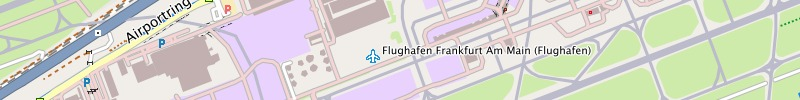
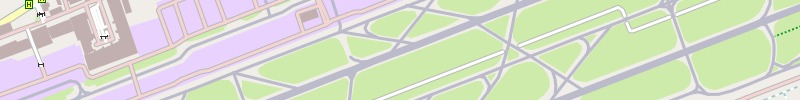

Garmin GPS-Gerät: Installation auf Micro-SD-Karte
- Installationsimage der Freizeitkarte downloaden und entpacken
- Micro-SD-Karte (in Adapter einstecken und) in Computer einlegen
- Datei "gmapsupp.img" in den Ordner "/garmin" auf Micro-SD-Karte kopieren
Microsoft Windows: Installation für Garmin BaseCamp
- Installationsarchiv der Freizeitkarte downloaden und entpacken
- BaseCamp beenden (falls aktiv)
- Karte installieren (Doppelklick auf Installationsarchiv)
- BaseCamp starten
Apple Mac OS X: Installation für Garmin BaseCamp
- Installationsarchiv der Freizeitkarte downloaden und entpacken
- BaseCamp beenden (falls aktiv)
- Karte installieren (Doppelklick auf Installationsarchiv)
- BaseCamp starten
Alle Betriebssysteme: Installation für QLandkarte
- Imageverzeichnis der Freizeitkarte downloaden und entpacken
- Verzeichnis am Zielort entpacken
- QLandkarte starten
- Datei -> Karte laden
- tdb-Datei öffnen (z.B. "Freizeitkarte_Deutschland.tdb")
- Basiskarte (im selben Verzeichnis) öffnen (z.B. "Freizeitkarte_Deutschland.img")
Anmerkungen:
- für OS X und Windows wird ein installiertes Garmin BaseCamp vorausgesetzt
- für die Installation unter OS X ist zusätzlich das Programm MapManager erforderlich
- möglicherweise ist auf der Speicherkarte der Ordner "Garmin" zunächst anzulegen
- eine Installation der Karte in den internen Festspeicher des GPS-Gerätes wird NICHT empfohlen
- alternativ kann die Gesamtkarte auch via USB-Kabel auf die Speicherkarte im GPS-Gerät übertragen werden
- alternativ können einzelne Kartenkacheln via Garmin MapInstall auf die Speicherkarte übertragen werden
- die Anzahl der Anzeigedetails sollten in BaseCamp und im GPS-Gerät auf "Maximum" eingestellt werden
- die Karte sollte auch unter Garmin MapSource lauffähig sein (dies ist jedoch nicht getestet)
